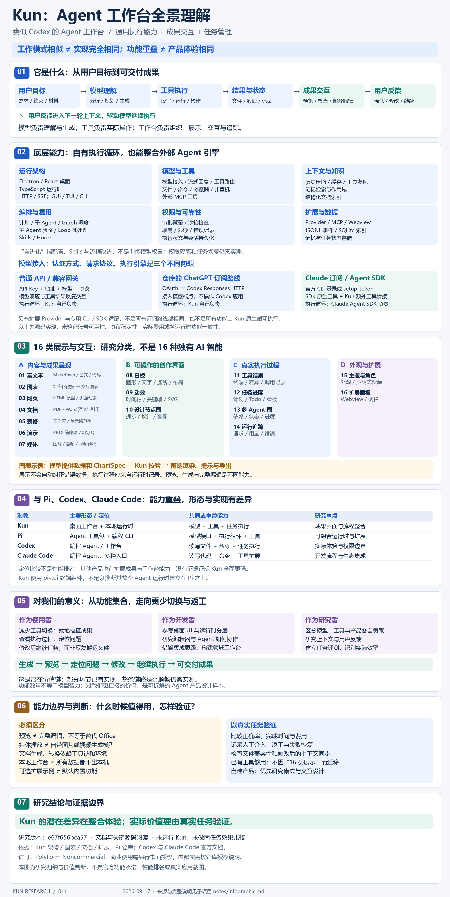

16 类是界面分类
包括内容呈现、可操作创作界面、真实执行记录，以及外观与扩展。不是 16 项独有 AI 智能，也不会自动提升模型判断的正确率。
给它一个目标，让模型调用工具、处理项目、检查结果，再继续推进。Kun 将这套执行过程，组织成一个可观察、可控制的本地工作台。
模型负责理解与生成，执行引擎驱动工具，Kun 统一组织任务与成果。
自有 Agent 循环与外部 SDK 路线并存；比较的是产品类别，不表示实现、质量或成熟度相同。
对话与图表 · 设计画布
文档预览 · 任务与执行轨迹
编程 · 设计 · 写作与分析
多 Agent 协作 · 自动化
模型与工具 · 上下文与记忆
权限 · 持久化 · 调度与恢复
依据固定版本的官方文档与关键源码。页面中的结构图是研究示意，不是 Kun 界面截图；功能存在不等于已完成实测，依赖模型、配置或平台的条件会随项说明。
与 Pi、Codex、Claude Code 的任务能力高度重叠。Kun 的潜在差异在成果预览、部分编辑、过程追踪和任务流程的整合体验；上下文、权限、调度与恢复的实现也会影响效果。现有研究不能证明它全面更强。
包括内容呈现、可操作创作界面、真实执行记录，以及外观与扩展。不是 16 项独有 AI 智能，也不会自动提升模型判断的正确率。
能生成 PDF / PPT、能直接预览、能完整编辑是三个层次。已有查看器与专用编辑路径，不等于具备 Office 全部能力；媒体播放也不等于自带生成模型。
对我们的意义：普通使用看它能否减少切换与返工；自建产品则研究 UI、编辑器、模型与执行引擎如何协作。已有工具足够时，不因功能数量而迁移。

Code 与 Work 是主要工作入口，Design 位于 Code 任务内。其他能力围绕这些任务提供计划、工具、产物和协作。
从已有仓库出发，搜索代码、修改文件、执行命令，再用测试和 Diff 判断结果。
把自然语言需求整理为可追踪的计划，让执行围绕目标与验收推进。
先生成可预览的设计，再将设计上下文带入真实应用实现。
围绕本地文档起草、续写、润色、引用和分析。
将演示任务交给专用子流程，在白板审阅与文件输出之间保留对应关系。
组合本地资料、浏览器、网页工具和 MCP，形成带来源的分析。
把每轮重复操作写成流程，用条件、时间或事件触发。
在 API 或文件工具之外，通过受控桥接观察并操作界面。
展示能力包括内容渲染、成果预览和执行过程呈现。下面按用户实际看到的东西整理；“有组件或契约”与“所有安装环境都可用”并不等价。
四个小图仅用于说明呈现类型，由本手册原创绘制；没有使用或伪造 Kun 运行截图。
把模型输出显示成可阅读、可定位的技术内容。
const result = await runTask()让用户看见 Agent 改了什么，以及命令实际返回什么。
− return user.name+ return user?.name ?? '访客'查看改动，再结合真实测试验收。模型提供结构化数据，桌面负责统一绘图。
在设计与开发之间，直接看见可交互的页面。
用对象组织流程、架构、想法和设计稿。
为画布对象和 SVG 产物添加可检查的动态变化。
把提示、设计和图片生成关系画成节点流程。
围绕文档本身阅读、引用和提问。
阅读表格数据，并让 Agent 知道问题对应哪张表、哪个范围。
从生成方向到逐页结果，给演示稿可见的审阅位置。
在工作区中直接查看或播放已有媒体。
把执行目标显示为可追踪的工作列表。
看清谁在做什么，以及结果依赖谁。
将一段对话展开成可检查的事件账本。
改变工作台的视觉形象和背景表现。
让新功能在工作台旁拥有自己的展示空间。
网页可用性取决于站点与登录条件；扩展必须协商权限。兼容位置和高风险 Direct DOM 另有边界。
图表是数据驱动的受控组件；HTML 原型是可交互的页面文件；白板是可编辑对象集合。它们有不同的权限、编辑方式和导出路径，不能笼统合并成“任意可视化”。
一轮模型回答只是其中一步。真正的工作台要管理工具、上下文、持久化、权限和失败之后的处理。
目标、工作区、历史、参考资料和可用工具。
返回文本，或带参数的工具调用请求。
检查权限，执行动作，记录结果与错误。
结果交回模型；推进、修正、结束或报告阻塞。
接收目标并呈现状态；画布等能力只在相应客户端可用。
kun serve · HTTP / SSE · 线程与回合模型调用、工具宿主、审批、调度、事件与用量。
外部动作真实发生；消息、产物引用和索引保存后用于续接与审查。
Electron 主进程管理桌面能力，React 展示界面；kun serve 负责 Agent。通过 HTTP/SSE 连接，避免在每个界面重复实现执行逻辑。
Provider 配置解析服务地址、凭据、模型与能力，兼容 OpenAI Chat Completions、Responses、Anthropic Messages 等接入形式。
组合上下文后请求模型，收集文本和工具调用；执行工具、记录反馈，再开始下一步。模型流、工具执行和回合生命周期分层处理。
本地、MCP、扩展和客户端工具按回合能力开放。工具较多时通过检索和描述按需发现；允许的只读调用可以小批量并行。
宿主在工具执行前检查工作区、沙箱与审批策略；扩展通过能力 Broker 使用获准功能，子任务继承受限权限。
稳定系统前缀、规范化工具 schema、历史修复、工具结果裁剪与上下文压缩共同控制输入规模。
线程、消息、回合、工具结果和事件持久化；JSONL 保存会话事实，索引帮助列表与搜索，客户端按序号接续事件。
长期记忆先做作用域和生命周期过滤再排序；文档知识库按结构定位；写作补全使用专门的 BM25 参考检索。
围绕目标与验收组织计划、Todo、执行和续接；运行中指令可进入 steering，后续输入有队列与送达确认。
Graph 将模型意图转成经宿主校验的任务图，按依赖调度、冻结权限、记录尝试，并经主 Agent 审查后交接结果。
记录请求尝试、耗时、用量、错误和恢复信息；通过租约、请求身份和幂等记录处理队列、进程和状态衔接。
Graph 完成后可生成脱敏 Episode，按策略整理 Agent profile、Skill 或 Graph recipe 候选，并保留版本、试用、提升、回滚等治理。
先区分三个问题：用什么凭据、以什么协议请求、由谁控制 Agent 循环。换模型可能同时改变执行机制，不是所有路线都只需要填一个 API Key。
| 接入路线 | 配置与连接 | 谁负责执行循环 |
|---|---|---|
| 普通模型 API | API Key、Base URL、模型 ID；Chat Completions / Responses / Messages 等协议 | Kun 自有 AgentLoop：模型调用、工具执行、结果回传 |
| 兼容网关 | LiteLLM、Vercel AI Gateway 等网关地址与凭据 | Kun 自有循环；网关负责其配置范围内的转发 |
| 仓库的 ChatGPT 订阅路线 | OAuth → Codex Responses 专用 HTTP 端点 | Kun 自有循环；不是操作 Codex 桌面应用 |
| Claude Pro/Max 订阅路线 | 官方 Claude Code 登录或 setup-token → Claude Agent SDK | Claude Agent SDK 负责循环，Kun 桥接额外工具、审批和状态 |
| 其他专用适配 | Gemini CLI API / Antigravity CLI / Cursor SDK 等类型 | 按具体适配器选择，不能统一归为同一种订阅机制 |
| 扩展 Provider | Node Host 自定义模型传输，输出规范化流 | 模型 Provider 扩展保留既有 Kun 循环 |
选择供应商、账号、模型 → 组装上下文与工具定义 → 协议适配 → 请求模型 → 解码文字、工具调用与用量 → 执行工具 → 将结果交回模型。
显式未知 Provider 会报错，不会静默使用另一家凭据；同一回合固定已选客户端。
SDK 控制循环；读写、命令、编辑等重叠工具使用 SDK 原生实现。Kun 额外工具通过进程内 MCP 桥接到实际执行器，再将事件统一呈现。
不应假设所有运行时的恢复、实时干预与上下文遥测完全一致。
未登录订阅账号或调用模型，没有验证接口稳定性、权限、费用或供应商当前支持状态。本地工作台也不代表远程模型请求留在本机。
下面按工具职责归类。名称是源码或文档中的代表入口，不是承诺在每个任务中全部出现。
| 类别 | 代表动作或入口 | 依赖与边界 |
|---|---|---|
| 文件与代码 | read / write / edit / ls / grep / glob / find；读取、搜索、修改文件 | 权限与工作区限制。内置工具 ↗ |
| 代码理解 | repo_map / lsp；仓库结构和语言服务 | 语言服务需要相应配置与项目支持；不能仅凭工具名承诺任意语言完整索引。 |
| 命令与验证 | bash / git_inspect / verify_changes；运行终端任务、检查 Git 和验证改动 | 宿主 shell 与项目环境决定命令是否可用。实现 ↗ |
| 网页信息 | web_fetch / web_search；抓取或搜索 | 能力需启用，搜索依赖实际 Provider。配置说明 ↗ |
| 浏览器 | browser_use；open、snapshot、screenshot、click、type、select | 需要可用桥接与有效页面状态。动作契约 ↗ |
| 桌面操作 | computer_use；截图、鼠标、滚动、键盘 | CUA 驱动与系统权限；跨平台须单独验证。兼容说明 ↗ |
| 用户输入与计划 | 结构化问题、审批、目标、计划、Todo 等运行时入口 | 显示方式由 GUI／TUI 决定，计划不自动替代执行。运行时能力 ↗ |
| 子 Agent 与 Graph | delegate_task、Graph 创建、监督、审查与修补 | 子任务按父级权限与调度规则运行。编排契约 ↗ |
| 记忆 | memory_create / memory_update / memory_delete 与相关检索 | 能力开关、作用域和生命周期规则。工具说明 ↗ |
| 知识库 | knowledge_catalog / knowledge_browse / knowledge_read | 只读挂载、有界证据、格式支持限制。读取流程 ↗ |
| 图表 | render_chart 或兼容的 chart 代码块 | 双重校验 ChartSpec，GUI 图表与文本客户端各自呈现。图表契约 ↗ |
| 白板与 SVG | 画布对象操作；design_svg_inspect / edit / animate / validate | 有效画布、版本身份、工具可见性和渲染回执。SVG 工具 ↗ |
| PPT | ppt_agent 专用任务与受控导出 | 工具链、子流程身份、审阅和导出校验。专用入口 ↗ |
| 外部服务 | MCP 服务和 Extension 注册的工具 | 服务安装、授权、网络与兼容版本。项目配置 ↗ |
| 消息与附件 | 消息渠道、Webhook、send_im_attachment 等 | 需已配置渠道与目标；发送被接受不等于收件人已收到。消息状态 ↗ |
它们都可能包含多个步骤，但调度方式和用途不同。尤其不要把三个带图形界面的系统当成同一个功能。
| 机制 | 谁驱动下一步 | 典型用途 | 结束与验收 |
|---|---|---|---|
| Direct Agent | 模型根据工具反馈判断 | 修 Bug、分析资料、完成一个明确任务 | 模型结束、用户停止、失败或运行限制 |
| 普通子 Agent | 主 Agent 委派，子任务执行后返回 | 独立代码阅读、专门分析或检查 | 主 Agent 结合子任务证据整合 |
| Graph Mode | 主 Agent 建图，宿主按依赖调度并组织审查 | 可分工且有依赖的复杂任务 | 节点验收、交接、集成与清理满足后交付 |
| Loop 工作流 | 显式循环体、条件或数组 | 反复打磨、逐份处理、批量任务 | 停止条件、最大次数、错误策略与运行上限 |
| Design 节点图 | prompt／design／image 的生成依赖 | 设计探索与图像／HTML 产物串联 | 按拓扑顺序执行并检查节点产物 |
按目标拆分节点，宿主验证依赖和预算。
冻结能力范围，调度就绪节点。
主 Agent 查看进展，对结果通过或要求修改。
交接已验收结果，检查产物并清理资源。
从经过验收的执行记录整理角色、技能或工作流配方候选，保留来源、版本、试用和回滚。自动创建候选不等于自动变成可信能力，更不等于模型自行训练或无限扩大权限。
“能记住”实际上包含不同层次。分清保存对象与读取方式，才能判断它解决了什么问题。
| 机制 | 保存或检索对象 | 怎样用 | 主要限制 |
|---|---|---|---|
| 当前上下文 | 本轮目标、历史、工具结果和附件 | 组织成模型请求；超预算时压缩 | 受模型窗口与输出预算限制 |
| 会话历史 | 消息、回合、工具调用、事件 | 持久化日志与索引，支持回看和续接 | 不等于全部历史每轮原样发给模型 |
| 长期记忆 | 跨会话相关的信息记录 | JSON + SQLite FTS5，过滤后按相关性排序 | 作用域、生命周期、记录数和字符预算 |
| 结构化知识库 | Markdown／文本／PDF／Office | 目录、标题、页、幻灯片、表范围索引；先浏览再读 | 只读；PDF 文本层无 OCR；部分旧格式需转换 |
| 写作检索增强 | 同一 Work 空间的 Markdown／文本片段 | BM25 + 关键词，为补全和局部编辑提供参考 | 有界扫描，排除当前文件；不是全局语义问答 |
| Graph 经验资产 | 已完成任务的脱敏证据摘要 | 生成 Agent／Skill／配方候选，经过治理使用 | 默认不训练模型；权限不能自动扩张 |
记忆、文档片段、网页与子任务结果都不应覆盖宿主的工具策略和审批要求。可读取资料，也不意味着可以修改资料原文件。
接模型、接工具、加载方法、扩展界面、换皮肤是不同机制。安装一个扩展也不代表自动得到所有外部服务权限。
| 机制 | 提供什么 | 应如何理解 |
|---|---|---|
| Provider | 模型协议、账号、模型目录与可选媒体生成 | 负责模型接入；质量与额度由实际模型和账号决定 |
| MCP | 外部工具服务；stdio、HTTP、SSE 等连接 | 给 Agent 增加动作与数据入口，需要信任和授权 |
| Skill | 提示、步骤、参考资料与可复用方法 | 指导工作方式，效果仍依赖模型和实际执行工具 |
| Hooks | 工具前后与运行生命周期事件处理 | 可观察、阻断或调整流程；是可执行外部逻辑 |
| Kun Extension | 可安装 .kunx 应用，UI、工具、Provider、后台逻辑 | 经公开 SDK 与 Broker 协作，独立于宿主私有界面 |
| UI 外观包 | 人物、图片、背景、主题和宿主动效 | 纯声明式视觉资源；不是可执行功能插件 |
用不透明媒体句柄管理读取、预览、处理和导出；由宿主提供受控 FFmpeg／ffprobe、分析能力、缓存产物与后台任务。
示例包含脚本、片段、时间线、属性与输出区域；项目模型涵盖字幕、关键帧、多序列、效果和渲染任务。
右侧栏包含 Slides、Canvas 和 Properties，用户与主 Agent 共同编辑一个带版本模型的独立 HTML 演示文件。
*.kun-ppt.html。在 Code 右侧栏查看抖音、B站和小红书，远程页面位于隔离 Webview，Cookie 使用扩展专属分区。
文档说明 Kokoro 本地语音、播放和录音保存机制，已保存录音可独立重播。
飞书／Lark、微信桥接和 Webhook 等入口可把消息或定时任务接入工作流。
能在界面里看见、能生成、能修改、能导出，是四个不同问题。以下按具体路径拆开。
| 内容或产物 | 已找到的能力 | 需要保留的边界 |
|---|---|---|
| 代码与项目文件 | 读取、修改、Diff、命令与测试 | 语言、依赖和运行环境由具体项目决定 |
| Markdown 与文本 | 写作、补全、局部修改、预览 | 引用片段可能是有界摘录，不是完整文件 |
| 结构化图表 | 受控渲染、数据表、PNG／CSV 导出 | 需要合法数据与允许的导出动作 |
| HTML 原型 | 画布预览、版本、独立 HTML／PDF 导出 | 页面交互与真实后端功能分开 |
| 图形白板与 SVG | 对象编辑、样式、画布导出、SVG 结构工具 | 格式与动效由具体导出路径支持；不承诺通用视频导出 |
| 预览、文本层知识索引与引用；部分产物可打印为 PDF | 索引不包含通用 OCR；不是 PDF 全功能编辑器 | |
| Word 文档 | 预览、结构提取、引用与分析 | 常规 Office 资源只读；旧格式依赖转换 |
| XLS / XLSX | 预览、工作表与单元格范围索引 | 不承诺 Excel 全功能计算、宏与编辑 |
| PPTX | 专用 PPT 子流程创建／编辑／导出；预览与放映 | 依赖工具链，复杂版式与可编辑性未实测 |
| HTML 幻灯片 | 可选示例编辑 .kun-ppt.html | 示例非默认打包；与 PPTX 是不同格式 |
| 图片与音视频 | 本地预览／播放，图片或媒体生成可经模型／扩展接入 | 模型能力、编解码器、服务权限和费用不同 |
| 研究报告与流程结果 | 工作区文件、来源、工具证据和任务记录 | 事实准确性需校验，引用与质量评分非自动保证 |
| 入口 | 共同能力 | 展示或执行差异 |
|---|---|---|
| 桌面 GUI | 模型、线程、工具、审批与运行时状态 | 拥有画布、交互图表、文档／媒体预览和桌面相关功能 |
| 终端 TUI | 相同协议和持久数据体系 | 文本为主；图表退化为摘要，GUI-only 工具不能假定可用 |
| CLI / HTTP API | 运行任务、调用工具、读取状态与事件 | 结构化结果可供外部程序消费；没有自动出现的桌面画布 |
| IM / Webhook / Extension | 复用运行边界和相应任务能力 | 具体能力由来源、权限和当前 Host 决定 |
下面是机制示例，不是本次已跑通的案例。每条流程最后都要有能检查的结果。
读取目标与报错 → 检索相关代码 → 修改 → 运行测试 → 查看 Diff 与结果。可见产物是文件改动和验证记录，底层依赖文件工具、命令、上下文与执行循环。
描述使用场景 → 生成 HTML／画布方案 → 预览与迭代 → 整理设计系统 → 进入代码实现 → 验证运行页面。原型交互不能代替真实业务逻辑验收。
挂载资料 → 按结构检索并引用 → 形成报告／大纲 → 专用 PPT 流程生成与审阅 → 检查文件。检索证据、图表数据、页内容和导出结果需要分别确认。
主 Agent 建图 → 并行处理独立节点 → 审查结果 → 将批准内容交给后续节点 → 集成测试。Graph 界面显示进展，宿主调度与验收决定真正状态。
配置触发时间 → Loop 遍历文件 → 每份生成摘要 → 汇总成功与失败 → 保存或经授权渠道发送。流程需有最大次数、错误策略和运行环境。
作为日常 Agent 工具，它与现有工作方式有较大重叠；作为工程参考，值得看它怎样把模型、工具、展示和任务状态接起来。当前没有替代 Codex 的效果对照，也不能仅凭功能列表判断更强或更省钱。
| 对象 | 主要定位 | 我们关注什么 |
|---|---|---|
| Kun | 桌面工作台，自有循环与外部执行能力并存 | 成果界面与工作流程整合 |
| Pi | Agent 工具包、模型接口与编程 CLI | 可组合运行时和扩展 |
| Codex | 编程 Agent / 工作台 | 真实任务完成体验与权限边界 |
| Claude Code | 多入口编程 Agent，另有 Agent SDK | 开发流程与可嵌入执行能力 |
这是定位比较，不是排他性功能矩阵或性能排名。其他工具同样在扩展工作台与成果能力。Kun 使用 pi-tui，不代表整个运行时建立在 Pi 上；Claude SDK 则是明确的执行引擎集成。
验证价值：同一任务比较正确率、完成时间、费用、人工介入、返工和失败恢复，并检查文件兼容性及用户修改能否准确进入下一轮上下文。
本手册尽量覆盖固定提交中的主要产品面、底层机制和相关扩展，但不宣称穷尽每个内部开关或已经验证全部实现。
| 容易产生的理解 | 本手册采用的准确表述 |
|---|---|
| 类似 Codex，所以能力完全相同 | 同属 Agent 工作台类别；实现、模型、生态和质量需要分别判断。 |
| 本地优先，所以绝不联网 | 状态主要保存在本机；云模型和外部服务仍可能接收上下文或数据。 |
| 支持 Office，所以能任意原地编辑 | 普通预览、引用、分析与专用 PPT 生成／编辑是不同路径，受资源权限控制。 |
| 有视频编辑器代码，所以安装即有 | 当前默认打包目录已排除视频和 HTML 演示编辑器；按可选源码示例理解。 |
| 多 Agent 或自进化，所以会越来越强 | 具备调度与经验资产治理机制；没有本研究的质量提升测量，也不是权重训练。 |
| 支持恢复，所以任何副作用都能安全重跑 | 恢复需要核对执行状态、幂等身份与外部结果，无法一概承诺。 |
| 支持图表，所以能执行任意前端代码 | 图表是严格数据契约；HTML 原型与扩展 Webview 使用其他受控路径。 |
| 仓库公开，所以商业使用无条件 | PolyForm Noncommercial；作者另有书面商业和内部使用授权要求。 |
源码标记 0.3.9，不等于确认某个已发布安装包包含全部功能。文档发生冲突时，优先写明差异，并根据当前实现或打包入口作有限判断。
Kun 引用均锁定到同一提交，避免把之后的功能变化混进本次结论。Codex 官方链接仅用于确认产品类别所涉及的编辑与执行能力。
仓库 KunAgent/Kun · 源码版本标记 0.3.9 · 研究日期 2026-09-17e67f656bca573d5e6a4970a5094a30f3afd09011
本页为原创中文研究整理，图示为机制说明，没有复制上游应用实现、品牌素材或运行截图。项目名称用于标识研究对象。本页不代表 Kun 官方，不构成商业授权；上游许可按其 LICENSE 原文执行。